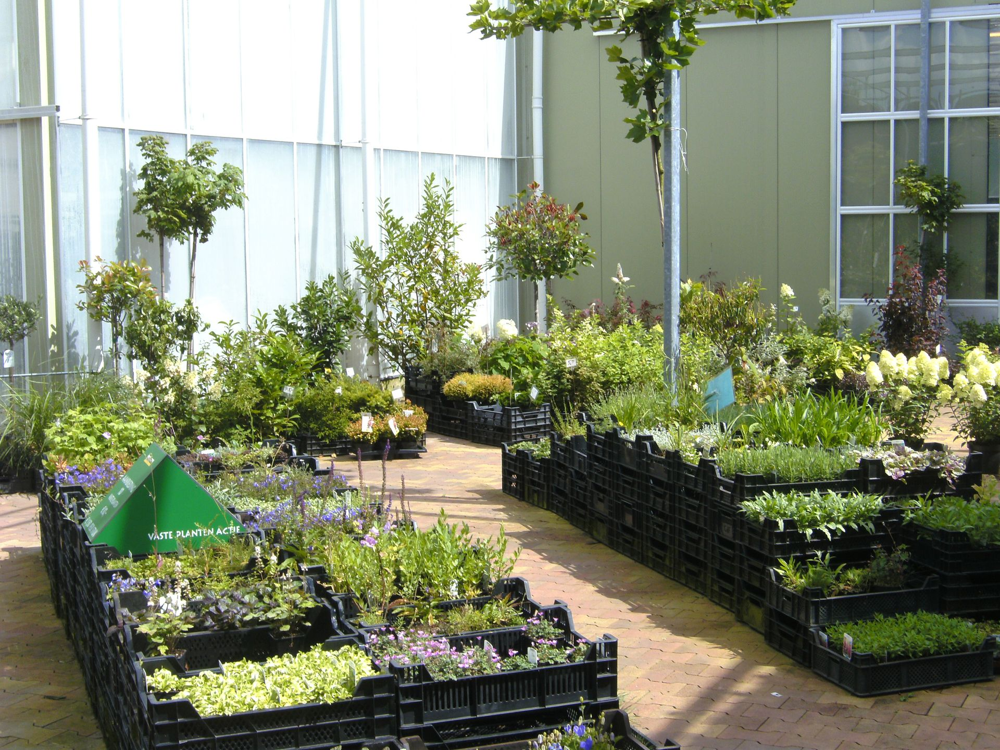

Eigen kwekerij
Productie en verkoop in eigen beheer: de mooiste producten komen rechtstreeks uit onze kassen.

Bij ons vindt u een uitgebreid assortiment planten uit eigen kwekerijen. Alles wordt op een duurzame wijze geteeld.

Productie en verkoop in eigen beheer: de mooiste producten komen rechtstreeks uit onze kassen.
Met de grootste zorg voor natuur en milieu. Daarvoor zijn wij MPS-A gecertificeerd.
Zodat u de juiste keuze kunt maken voor uw tuin.
Ons glastuinbouwbedrijf is gelegen binnen de gemeente Apeldoorn aan het mooie Apeldoorns Kanaal. Met ons tuincentrum onderscheiden wij ons van reguliere tuincentra omdat wij beide, zowel de productie als de verkoop aan de particuliere markt, in eigen beheer uitvoeren. Onze producten worden geproduceerd op een duurzame manier, met de grootste zorg voor natuur en milieu. Hiervoor zijn wij MPS-A gecertificeerd. U bent van harte welkom in onze verkoophal.
Bij onze kwekerij draait alles om kwaliteit, vakmanschap en liefde voor groen. Met jarenlange ervaring kweken wij sterke, gezonde planten die met zorg worden opgekweekt. Of u nu op zoek bent naar tuinplanten, vaste planten, sierheesters of seizoensproducten, bij ons bent u aan het juiste adres. Wij geloven dat een mooie tuin begint bij een gezonde plant. Daarom besteden wij dagelijks veel aandacht aan de verzorging, groei en kwaliteit van ons assortiment. Dankzij onze passie voor het vak en oog voor detail leveren wij planten waar u jarenlang plezier van heeft.
Jullie zijn van harte welkom. Kijk gerust rond en vindt de plant die bij u past. Wij helpen u graag om uw tuin tot leven te brengen.